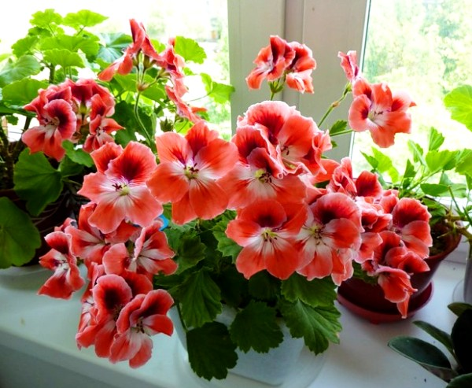

В наши земли дикая герань была завезена из Англии в середине XVII века, именно поэтому все решили, что туманный берег и есть родина экзотичного цветка – но это ошибочное мнение. Невзирая на свою холодостойкость, герань на самом деле является выходцем из южных краев – из Индии и побережья Африки.
Многие экспедиции имели целью изучение флоры и фауны, характерной для той или иной местности – именно потому столь экзотичный цветок, как герань, просто не мог остаться ими незамеченными. Ботаники сразу же обратили свое внимание на исключительной красоты соцветия, и у них сразу же возникло огромное желание адаптировать эту культуру для роста и развития в других погодных условиях. Именно так герань и стала распространяться по всему земному шару, постепенно приспосабливаясь к самому разнообразному и порой непростому климату, в котором она оказывалась. На сегодняшний день это одна из самых холодостойких цветочных культур, поэтому многим кажется таким удивительным тот факт, что родилась она в жарких странах.